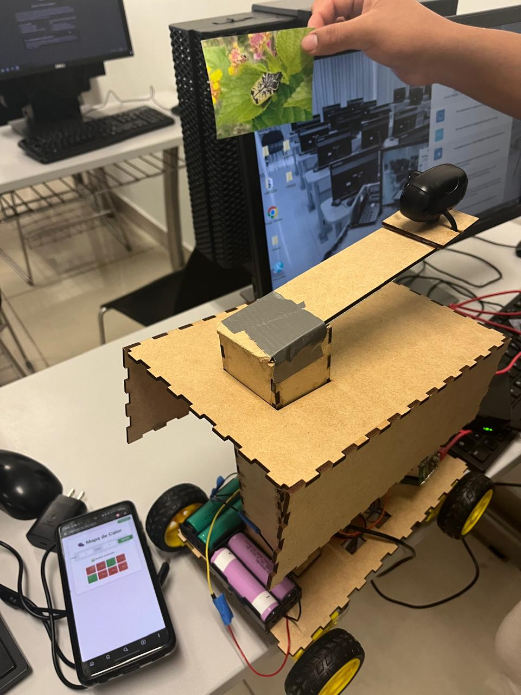
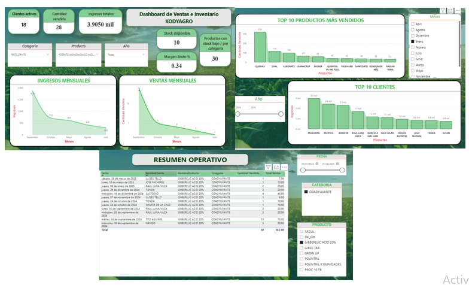

Python
Análisis de datos, automatización y lógica de programación.
Desarrollador web & Analista de datos en formación
Universidad ESAN

Soy estudiante de Ingeniería de Tecnologías de Información y Sistemas con interés en el desarrollo web y el análisis de datos. Me caracterizo por mi pensamiento analítico, aprendizaje rápido y capacidad de adaptación.
Busco oportunidades para desarrollar soluciones tecnológicas que aporten valor y mejorar continuamente mis habilidades en programación.
Análisis de datos, automatización y lógica de programación.
Desarrollo de interfaces web responsivas y funcionales.
Visualización de datos y creación de dashboards interactivos.

Este proyecto presenta un sistema robótico móvil con visión artificial para detectar escarabajos plaga en viñedos.

Robot educativo para ayudar a niños con TDAH a mejorar su atención.

Proyecto enfocado en el análisis y visualización de datos usando herramientas como Power BI.
Diseño y creación de aplicaciones móviles eficientes que mejoran la experiencia del usuario.
Aplicación de tecnologías emergentes para resolver problemas reales y generar impacto positivo.
Transformación de grandes volúmenes de datos en información valiosa para la toma de decisiones estratégicas.
¿Quieres trabajar conmigo o ver más de mis proyectos?